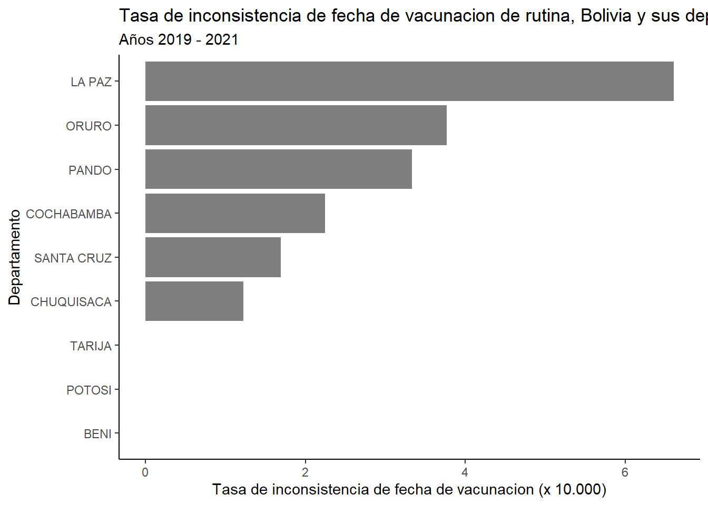
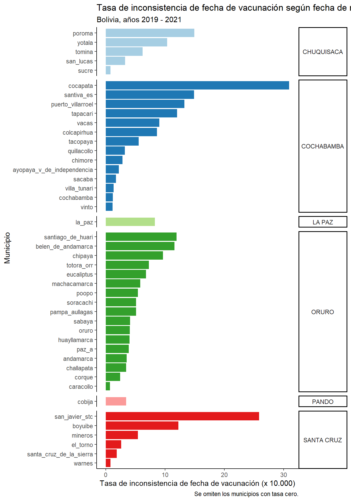

# 1. Librerías -----------------------------------------------------------------
# Instalar y cargar librerías
pacman::p_load(rio, # importar y exportar bases de datos
tidyverse,
janitor,
lubridate,
DT#paquete nuevo en esta lección
)
# 2. Cargar base de datos ------------------------------------------------------
# Cargar datos de dosis de vacunas covid administradas
data <- import("data/2022-07-21_RNVe-rutina-bol.csv")3 Consistencia
La consistencia de las fechas de vacunación nos permite visualizar que los eventos individuales de vacunación respondan a una lógica en correspondencia con el esquema definido por el país.
Esto implica por ejemplo que no aparezcan registrados en la base de datos casos como la vacunación de una tercera dosis antes de la primera o segunda dosis. O que se vacune antes de la edad establecida a una persona.
3.1 Metodología
Para identificar inconsistencias utilizaremos: Para el análisis de inconsistencia de fecha de vacunación utilizaremos - “fecha_vacunacion” y “fechanacimiento”. - Crearemos una variable tiempo de seguimiento y usaremos esa variable para identificar aquellas observaciones inconsistentes.
3.1.1 En R
Cargamos la base de datos y los paquetes
Generar variables “f_vac” y “f_nac” tipo Date para estimar “time” usando gramática tidyverse y funciones de lubridate
surv_data <- data %>% # generar una nueva BBDD para poder volver atrás
# dejar las variables a formato date
mutate(f_vac = dmy(fecha_vacunacion),
f_nac = dmy(fechanacimiento)) %>%
# generar variable de tiempo
mutate(time = as.double(f_vac - f_nac))Warning: 10 failed to parse.# Miremos las primeras 10 observaciones de las variables que nos interesan
surv_data %>%
select(f_vac, f_nac, time, dpt_nombre) %>%
head(10) f_vac f_nac time dpt_nombre
1 2019-03-29 2019-01-16 72 ORURO
2 2019-03-29 2019-01-16 72 ORURO
3 2019-03-29 2019-01-16 72 ORURO
4 2019-03-29 2019-01-16 72 ORURO
5 2019-01-23 2019-01-16 7 ORURO
6 2019-01-23 2018-06-22 215 ORURO
7 2019-01-23 2018-06-22 215 ORURO
8 2019-01-23 2018-06-22 215 ORURO
9 2020-03-16 2018-09-16 547 CHUQUISACA
10 2020-03-16 2018-09-16 547 CHUQUISACAGeneraremos una variable que identifique las observaciones inconsistentes
surv_data_2 <- surv_data %>%
mutate(incia = ifelse(time<0, "si", "no"))
datatable(data.frame(table(surv_data_2$incia)))3.1.1.1 Hagamos una visualización por departamento y municipio
Generaremos tabla para estimar Tasa de Inconsistencia de fecha de vacunación
# la nombraremos "t"
t <- table(surv_data_2$dpt_nombre, surv_data_2$incia)
#class(t)
#glimpse(t)
# al analizar los resultados vemos que amplificando por 10.000 todos los dptos
# tienen, al menos, un dígito a la izquierda del separador de decimales.
# Podemos incluir en la tabla el valor del país
BOLIVIA <- table(surv_data$incia)
# Agregar una fila a la tabla "t"
t_tot <- rbind(t, BOLIVIA)
# Ahora podemos usar los datos para estimar la tasa
t_tot <- t_tot %>%
# transformar en data.frama
as.data.frame() %>%
# generamos una variable con el total de observaciones
mutate(tot = no + si) %>%
# estimamos la tasa de insocnsistencia y probaremos amplificando por 100 - 10.000
mutate(tasa_1 = (si/tot)*100,
tasa_2 = (si/tot)*1000,
tasa_3 = (si/tot)*10000) %>%
# generaremos la variable departamento (dpto) desde rownames
mutate(dpto = row.names(t_tot))
# 5. Podemos ver los datos para comparar
# Podemos generar una variable para asignar color en aquellos departamentos que
# están por sobre o debajo del valor del país
# identificaremos la tasa pais
tasa_bol <- t_tot["BOLIVIA", "tasa_3"]
t_tot <- t_tot %>%
mutate(tasa_g = ifelse(tasa_3 == tasa_bol, "País", NA)) %>%
mutate(tasa_g = ifelse(tasa_3 < tasa_bol, "Menor", tasa_g)) %>%
mutate(tasa_g = ifelse(tasa_3 > tasa_bol, "Mayor", tasa_g))# Mejoramos la paleta de colores y ocultamos la leyenda
# https://colorbrewer2.org/#type=sequential&scheme=BuGn&n=3
# o podemos usar los colores de la bandera
# https://es.wikipedia.org/wiki/Archivo:Bandera_de_Bolivia_(Estado).svg
ggplot(data = t_tot,
aes(x = tasa_3,
y = reorder(dpto, tasa_3),
fill = tasa_g)) +
geom_bar(stat = "identity") +
theme_classic() +
labs(x = "Tasa de inconsistencia de fecha de vacunacion (x 10.000)",
y = "Departamento",
title = "Tasa de inconsistencia de fecha de vacunacion de rutina, Bolivia y sus departamentos",
subtitle = "Años 2019 - 2021") +
scale_fill_manual(values=c('#D32011','#1f78b4','#F0E53C'))+
theme(legend.position = "none")
tabla_con_groupby <- data %>%
mutate(f_vac = dmy(fecha_vacunacion),
f_nac = dmy(fechanacimiento)) %>%
# generar variable de tiempo
mutate(time = as.double(f_vac - f_nac)) %>%
mutate(si = ifelse(time<0, 1, NA)) %>%
mutate(no = ifelse(time>=0, 1, NA)) %>%
group_by(dpt_nombre, mnc_nombre) %>%
summarise(si = sum(si, na.rm = T),
no = sum(no, na.rm = T)) %>%
mutate(tot = no + si) %>%
# estimamos la tasa de insocnsistencia y probaremos amplificando por 100 - 10.000
mutate(tasa_1 = (si/tot)*100,
tasa_2 = (si/tot)*1000,
tasa_3 = (si/tot)*10000) %>%
mutate(mnc = make_clean_names(mnc_nombre)) %>%
filter(tasa_3>0)
ggplot(data = tabla_con_groupby,
aes(x = tasa_3,
y = reorder(mnc, tasa_3),
fill = dpt_nombre)) +
facet_grid(dpt_nombre ~ ., scales = "free", space = "free")+ #https://ggplot2.tidyverse.org/reference/facet_grid.html
theme_classic() +
theme(strip.text.y = element_text(angle = 0))+
geom_bar(stat = "identity") +
labs(x = "Tasa de inconsistencia de fecha de vacunación (x 10.000)",
y = "Municipio",
title = "Tasa de inconsistencia de fecha de vacunación según fecha de nacimiento por municipio, esquema regular.",
subtitle = "Bolivia, años 2019 - 2021",
caption = "Se omiten los municipios con tasa cero.")+
scale_fill_manual(values=c('#a6cee3',
'#1f78b4',
'#b2df8a',
'#33a02c',
'#fb9a99',
'#e31a1c'))+
theme(legend.position = "none")